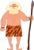

Форма простого времени Simple
Примечание: Надо понимать, что простое время Simple в английском языке означает действие "вообще", а не совершение действия. Если взять глагол "ходить", то:
Я иду - это не Present Simple!
Я хожу (вообще) - вот это Present Simple.
Подробнее про Simple можно посмотреть в видео:
Секреты английских глаголов
Основное: Таблица времен для формы Simple
|
|
Прошедшее
(Past) |
Настоящее
(Present) |
Будущее
(Future) |
|
|___|___|_
__|___|___
|___|___|_
__|___|___
|___|___|_
__|___|___
|___|___|_
__|___|___
|___|___|_
__|___|___
|___|___|_
__|___|___
|___|___|_
__|___|___
|___|___|_
__|___|___
|___|___|_
__|___|___ |
?
Вопрос |
Did |
Did + (I, You, We, They, He, She, It) + V ? |
Dodo |
Do +(I, You, We, They) + V ? |
|
Willка |
Will +(I, You, We, They, He, She, It) + V ? |
|
Does +He, She, It) + V |
|
+
Повест-
вование |
Дed |
(I, You, We, They, He, She, It) + V-ed/V2 |
|
(I, You, We, They) + V |
|

Willка |
(I, You, We, They, He, She, It) + will + V |
|
(He, She, It) + V-es |
|
–
Отрицание |
did not |
(I, You, We, They, He, She, It) + did not + V |

Dodo not |
(I, You, We, They) + do not + V |
|

Willка |
(I, You, We, They, He, She, It) + will not + V |
|
(He, She, It) + does not V |
Чтобы запомнить структуру таблицы, надо самостоятельно ее с нуля рисовать и рассказывать:
- Слева вековая стена английского языка.
- В верхней строчке вопрос, он выглядывает сверху стены, "что там? все нормально?". То есть сверху структура вопросительного предложения.
- В средней строчке повествовательное предложение, основа, пол
- В нижней строчке отрицательное предложение, подвальчик, обозначается знаком "-", потому что ниже пола.
- Столбцы времени расположены по оси времени, слева направо.
Как запомнить времена формы Simple ?
Персонажей/предметы нужно тоже последовательно рисовать и рассказывать.
Прошедшее (Past)
В прошлом живет Дed. Он живет на среднем, повествовательном этаже. Вспомогательного глагола в повествовании нет, поэтому меняется сам глагол. Это окончание -ed надо добавлять к глаголам, либо использовать вторую форму для неправильных.
Над Дedом (там где вопрос) и под ним (там где отрицание) живут Didы. Это тоже деды, старые охранники с копьями, а копье как буква i. Сверху Did стережет стену, внизу Did стережет припасы.
* * *
Did используется как есть: в вопросе впереди предложения, а в отрицании, естественно, как did not перед глаголом. Так как грамматическая нагрузка перенесена на did, то основной глагол в вопросах и в отрицаниях говорится в инфинитиве (как в словаре).
Главное правило английского языка
Если есть вспомогательный глагол, то грамматическая нагрузка всегда переносится на этот вспомогательный глагол. Основной глагол в таком случае всегда остается в инфинитиве (как в словаре). Это правило работает для всех времен и всех форм времени английского языка без исключения!
Другими словами: если есть вспомогательный глагол, то во всяких временах меняется именно он, а обычный глагол, который есть в этом же предложении, остается в инфинитиве.
Настоящее (Present)
В настоящем у нас зоопарк.
В настоящем живет птица Dodo (Да, у нас сказочная таблица, поэтому Dodo живет в настоящем). Только от Деда она сбежала, чтобы он ее яца не собирал, ведь у него много свободного времени. Поэтому Dodo живет только на верхнем и нижнем этаже, ведь охранники заняты охраной, они яйца не собирают. Глядя на эту птицу, можно запомнить: вопрос строится с использованием вспомогательного глагола do, и отрицание строится с помощью do not. А в повествовательном предложении глагол do не используется (птички ведь нет).
Еще в настоящем живет полупрозрачная змейка. Она изогнулась как окончание глагола -es. Полупрозрачная она вот почему: для I, You, We, They она невидна (ее нет), а для He, She, It - она видима. Если в предложении есть глагол Do, то согласно главному правилу английского языка меняется именно он (так как он вспомогательный) и змейка -es пристыковывется к нему, конечно, с учетом полупрозрачности. Ну а если Do нет (в повествовательном предложении), то змейка -es пристыковывается к самому глаголу, так же с учетом полупрозрачности.
* * *
Важно для понимания: в настоящем времени Simple используется, естественно, первая форма глагола. Первая форма глагола строится так:
- Для I / You / We / They первая форма совпадает с инфинитивом (как пишется в словаре);
- А для He / She/ It добавляется окончание -es (или -s).
Так как в повествовательном предложении впомогательного глагола do нет (Dodo убежала со среднего этажа), то грамматическая нагрузка находится на самом глаголе: его нужно ставить в первую форму. То есть, для He / She / It нужно к глаголу добавлять окончание -es (или -s).
В вопросительном и отрицательном предложении используется вспомогательный глагол do. Так как есть вспомогательный глагол, то грамматическая нагрузка ложится на него. Поэтому, для случая He / She / It в вопросе и отрицании, вместо вспомогательного глагола do необходимо писать does. Сам глагол будет находиться в инфинитиве (см. выше главное правило английского языка).
Будущее (Future)
Тот, кто хорошо учит английский, тому в будущем всегда найдется что поесть. В будущем везде используется Willка.
* * *
Форма Simple - это простая форма. И поэтому глагол will используется предельно просто, как единственный вспомогательный глагол. Никаких will be в форме Simple нет. Просто will.
Использование такое же что и у других вспомогательных глаголов. Для вопроса - этот вспомогательный глагол ставится в начале предложения. Для повествования - перед глаголом. Для отрицания - перед глаголом, с добавлением not.
Грамматическая нагрузка
Чтобы уметь образовывать различные времена и различные типы предложений в английском языке, надо знать что такое грамматическая нагрузка и что такое инфинитив. Подробно эти вопросы разбираются в видео:
АНГЛИЙСКИЙ С НУЛЯ (Четкое понимание за 50мин)
Из этого видео можно почерпнуть следующее:
- Инфинитив - это такая форма глагола, в которой полностью отсутствует грамматическая нагрузка. Глагол "петь" - это инфинитив, а глагол "пела" - это глагол, который говорит о том, что он написан в женском роде, в единственном числе, в прошедшем времени, и поэтому глагол "пела" инфинитивом не является. Кратко: инфинитив - это отсутсвие грамматической нагрузки.
- В английском языке, если нет вспомогательного глагола, грамматическая нагрузка ложится на сам глагол, и он меняется.
- Если же есть вспомогательный глагол, то меняется именно он, а основной глагол остается в инфинитиве (как в словаре).
- Для глагола Do, форма прошедшего времени - Did, а форма будущего создается через модальный глагол Will.
Важное примечание. К сожалению, есть большое количество обучающих материалов и учебников, в которых смешивается понятие инфинитива и первой формы глагола. Делается это примерно такими утверждениями:
Первая форма в английском языке называется - Infinitive, с ее помощью образуются остальные формы, то есть она является исходной.
(Привет от сайта https://online-teacher.ru)
Весьма вероятно, что это утверждение неверно! Правильнее говорить так: первая форма глагола для I / You / We / They совпадает с инфинитивом, у которого отброшена частица to. А для He / She/ It, для образования первой формы глагола, нужно брать инфинитив (тоже без to) и добавлять к нему окончание -es (или s). Другими словами: первая форма глагола - это не инфинитив!
Если при изучении учитывать вышеприведенное понятие инфинитива, то дальнейшее понимание английского языка станет проще.